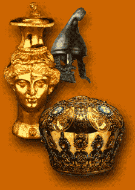
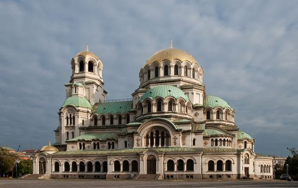
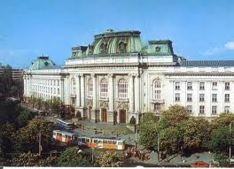
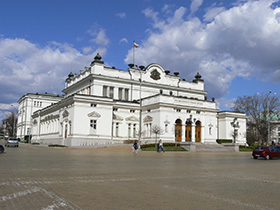
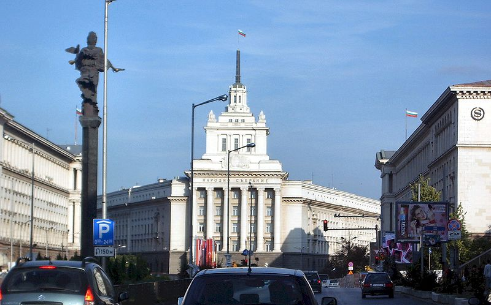
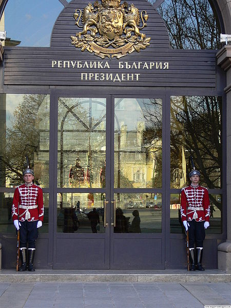
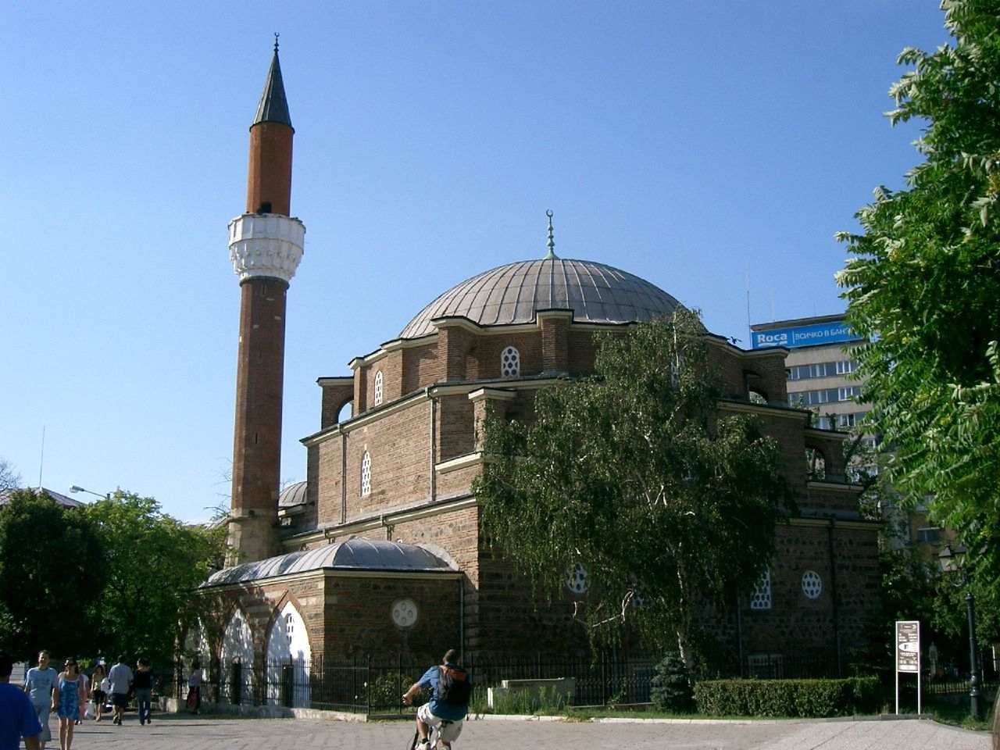
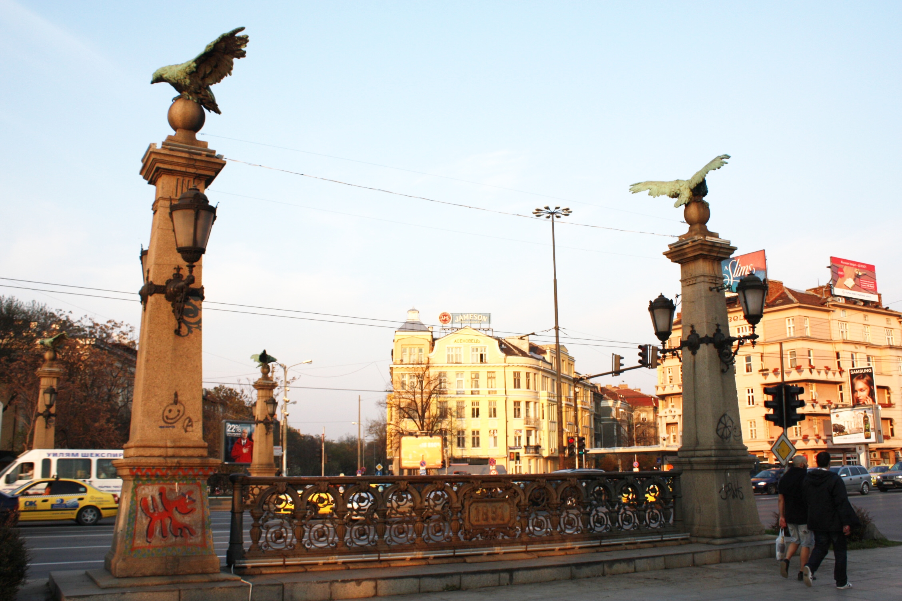

Russian Church St. Nicholas Banya Bashi Mosque
Objects of Our Excursion
National Museum of History

St. Alexander Nevsky Cathedral Sofia University St.Kl. Ohridski


Bulgarian Parliament Largo Presidency entrance



Monument to the Tsar Liberator Bulgarian Academy of Sciences



- Sofia Central Market Hall The rotunda of St. George The Statue of St. Sophia


Eagle's Bridge Ivan Vazov National Theather
